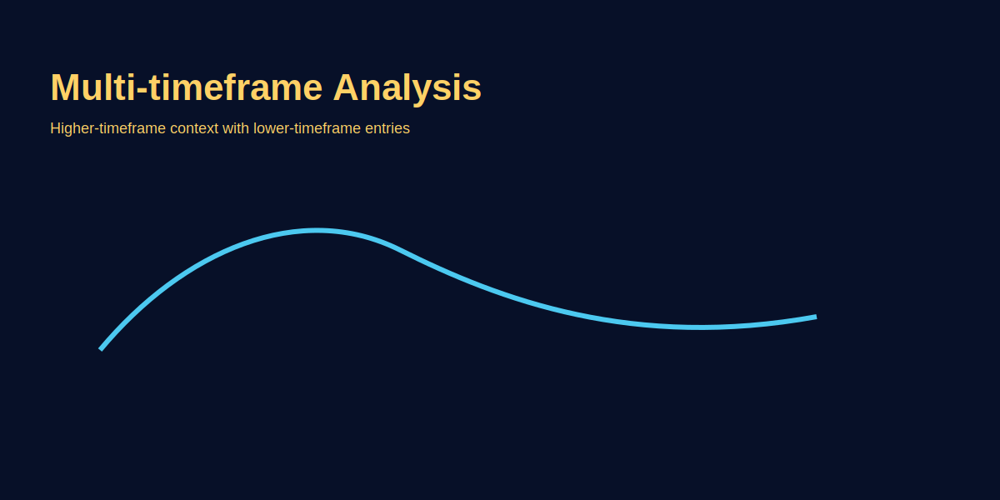

Multi-Timeframe Analysis
Problem-based introduction
Beginners confuse signals across charts—higher timeframe trend vs lower timeframe entries. This article explains how to align timeframes, choose trend/timeframe pairs, and apply the method to GOLD (XAU/USD).
Multi-Timeframe Analysis kya hai?
Multi-timeframe analysis (MTF) ek method hai jahan aap ek hi asset ko different timeframes me dekhte ho. Higher timeframes (daily, weekly) overall trend aur market context dete hain, while lower timeframes (15m, 1H) precise entry timing provide karte hain. Concept simple hai: higher TF trend decide karo, lower TF me execute karo. Lekin practice me confusion hota hai—kaunse timeframes use karein, kis timeframe se entry le, aur kis TF pe stop lagaye. Yeh article clearly define karega MTF stack, alignment rules, aur GOLD (XAU/USD) pe real examples ke saath.
Professional traders hamesha multiple timeframes pe analyze karte hain kyunki single timeframe tunnel vision create karta hai. Agar aap sirf 15m chart dekhte ho aur bullish pattern milta hai, but daily chart bearish hai, toh aap effectively trend ke against ja rahe ho—low probability trade. MTF analysis essentially macro context aur micro execution ko align karta hai. Problem yeh hai ki beginners 5-6 timeframes kholte hain aur analysis paralysis me padh jaate hain. Yahan pe hum define karenge optimal 3-timeframe stack aur simple alignment rules.
3-Timeframe Stack: Trend + Bias + Entry
Professional approach me typically 3 timeframes use hote hain, each ka apna role:
- Trend Timeframe (Higher TF): Yeh overall trend dictate karta hai. Swing traders ke liye daily ya weekly, intraday traders ke liye 4H ya 1H. Is timeframe pe aap trend ke saath hi trades le.
- Bias Timeframe (Middle TF): Yeh confirmation aur momentum check karta hai. Swing traders 4H ya 1H use karte, intraday traders 15m ya 5m. Yahan pe aap setup formation identify karte ho.
- Entry Timeframe (Lower TF): Yeh precise timing deta hai—retest ke baad entry, candle pattern confirmation, structure test. Swing traders 1H ya 15m, intraday 5m ya 1m.
Scalper stack example: Trend = 1H, Bias = 15m, Entry = 5m. Agar 1H GOLD bullish hai, 15m pullback ke baad bullish momentum ho, aur 5m retest + rejection candle mile, tab entry.
Swing trader stack: Trend = Daily, Bias = 4H, Entry = 1H. Daily uptrend me 4H pullback ke baad 1H retest se entry.
Is 3-TF approach ki beauty yeh hai ki aap macro (trend), meso (setup), aur micro (timing) ko separate kar paate ho. Confusion kam hota hai, decision-making systematic hota hai.
Alignment Rule: Trend ke saath hi trade le
Core rule bahut simple hai: Entry timeframe signal sirf tabhi act karo jab higher timeframe trend aligned ho. Matlab agar daily chart bearish hai, toh 15m bullish breakout ignore karo. Counter-trend trades low probability hoti hain, especially beginners ke liye. Alignment ka matlab:
- Daily uptrend → 4H pullback → 1H bullish setup = ✅ ALIGNED
- Daily downtrend → 4H rally → 1H bullish setup = ❌ COUNTER-TREND
- Daily sideways → 4H breakout attempt → 1H early signal = ⚠️ CAUTION (confirmation wait karo)
Practical me hota yeh hai: aap daily chart pe GOLD ka trend check karo (price above/below 50 EMA, higher highs/lower lows, etc). Agar daily bullish hai, toh tumhare 4H aur 1H trades bhi bullish bias ke saath hone chahiye. Pullbacks ko buying opportunity mano, not reversal signals. Yeh discipline edge deta hai.
GOLD (XAU/USD) MTF Example: Daily → 1H → 15m
Scenario: Daily chart bullish trend me hai (GOLD 2620 ke upar, higher highs bana raha). Tum 1H aur 15m pe entry dhundh rahe ho.
Step 1 — Daily Trend Check: Daily chart dekho. Price above 50 EMA, higher highs/lows, no reversal pattern. Trend = BULLISH ✅. Decision: Sirf long setups dhundho, shorts ignore karo.
Step 2 — 1H Bias/Setup: 1H chart me GOLD 2640 resistance touch karke pullback karta hai down to 2625 (support zone). Yahan 1H candle reversal pattern dikh raha (bullish engulfing ya pin bar). Bias = BULLISH MOMENTUM RESUMING ✅.
Step 3 — 15m Entry Timing: 15m pe zoom karo. Price 2625 support pe retest kar raha, 15m rejection candle close hota hai 2626 pe. Yeh tumhara entry trigger hai. Entry = 2626, Stop = 2620 (daily structure ke niche), Target = 2645 (1H resistance). Risk-reward = 1:3+.
Is example me aapne 3 timeframes ko systematically use kiya: daily ne trend diya, 1H ne setup diya, 15m ne entry trigger diya. Alignment perfect tha, probability high thi.
Timeframe Correlation: Fast vs Slow TFs
Different timeframes different speeds pe move karte hain. 1m chart me 50-pip move massive lag sakta, daily chart pe sirf wick. Beginners confuse hote ki kaunsa TF "sahi" hai—answer: saare sahi hain, but purpose alag hai. Yeh table correlation samjhata hai:
| Timeframe | Purpose | Typical Role | Candle Duration | Use Case |
|---|---|---|---|---|
| Weekly | Macro trend | Long-term bias | 1 week | Position traders, institutional view |
| Daily | Primary trend | Trend TF (swing) | 24 hours | Swing traders, trend followers |
| 4H | Intermediate moves | Bias TF (swing) / Trend TF (intraday) | 4 hours | Swing/intraday bridge |
| 1H | Session bias | Entry TF (swing) / Bias TF (intraday) | 1 hour | Most versatile TF |
| 15m | Short-term momentum | Entry TF (intraday) | 15 minutes | Scalpers, day traders |
| 5m | Micro timing | Entry TF (scalping) | 5 minutes | High-frequency scalpers |
| 1m | Ultra-fast moves | Order flow / noise | 1 minute | Professional scalpers (not recommended for beginners) |
Rule of thumb: Timeframes me 3-4x gap rakho. Agar trend TF daily hai, toh entry TF 1H ya 15m use karo, not 5m (too much noise). Agar trend 4H hai, entry 5m ya 1m pe ho sakti. Yeh gap alignment ko clear rakhta hai aur noise ko filter karta hai.
Top-Down Analysis Workflow
Professional traders "top-down" approach use karte: highest TF se start karo, progressively lower TF pe jao. Yeh workflow prevent karta hai tunnel vision aur ensures alignment. Step-by-step:
- Weekly/Daily (Macro): Trend kya hai? Bullish, bearish ya sideways? Key support/resistance levels kahan hain? Price kahan hai cycle me (breakout, retracement, consolidation)?
- 4H/1H (Meso): Current pullback ya rally kahan tak ja sakti? Structure kya hai (higher highs, lower lows)? Momentum kya hai (increasing/decreasing volume, rejection candles)?
- 15m/5m (Micro): Entry trigger kya hai? Retest confirm ho raha? Candle pattern kya hai? Stop kahan lagega?
Practical GOLD example (Top-Down):
- Daily: GOLD 2500-2700 range me consolidate kar raha. Recent break above 2640 = bullish breakout attempt. Trend = BULLISH BIAS ✅.
- 4H: Breakout ke baad first pullback 2635 pe aa raha. 4H bullish candle close ho raha 2638 pe = momentum resuming. Setup = LONG ✅.
- 15m: 15m retest 2635 support, rejection candle 2636 close. Entry = 2636, Stop = 2630, Target = 2655. Trade execute ✅.
Is workflow ko journal me document karo. Har trade ke liye screenshot rakho: daily context, 4H setup, 15m entry. Yeh review ke time clarity deta hai aur discipline improve karta hai.
Stop-Loss aur Target Placement: Konse TF se le?
Common confusion: stop higher TF structure ke basis pe lagaye ya lower TF? Answer: Stop placement higher timeframe structure se le, but entry lower TF se le. Matlab agar daily uptrend me trade le rahe ho, toh stop daily swing low ke niche rakho, not 15m candle low. Kyunki 15m stop bahut tight hoga aur noise se hit ho jayega, but daily stop meaningful hai—agar woh break ho jaye, trend hi question me aa gaya.
Example: Daily uptrend me GOLD 2640 resistance break kar raha. Entry 15m retest se 2638 pe liya. Stop kahan?
❌ Wrong: 15m candle low (2636) — bahut tight, noise se hit hoga.
✅ Right: Daily swing low (2620) ya 4H structure low (2630). Yeh meaningful stop hai jo actual trend reversal confirm kare.
Target bhi same logic: higher TF resistance levels use karo. Agar daily resistance 2660 pe hai, wahan partial book karo, not 15m resistance (2642) jo insignificant ho sakta. Higher TF levels zyada respect karte hain market participants.
MTF Discipline: Do's and Don'ts
✅ Do's:
- Consistent 3-TF stack rakho (trend, bias, entry) aur strategy ke liye document karo.
- Higher TF trend ke saath trade lo, counter-trend avoid karo jab tak advanced nahi ho.
- Entry timeframe me patience rakho—setup fully confirm hone do.
- Stops higher TF structure pe base karo, not lower TF noise.
- Har trade ke liye 3-TF screenshot save karo journal me.
❌ Don'ts:
- 5-6 timeframes mat kholo—analysis paralysis hota hai.
- Lower TF signal pe act mat karo agar higher TF aligned nahi.
- Timeframe stack ko trade-by-trade mat badlo—consistency rakho.
- Lower TF noise ko overanalyze mat karo.
- Higher TF ignore karke sirf lower TF pe mat focus karo.
Common MTF Traps aur Solutions
Trap 1: Lower TF Tunnel Vision
Problem: Sirf 5m ya 15m chart dekhte ho, daily trend ignore karte ho. Result: Counter-trend trades lete ho aur repeatedly stop-out.
Solution: Trade shuru karne se pehle daily chart compulsory check karo. Agar daily bearish hai, lower TF long signals skip karo.
Trap 2: Analysis Paralysis (Bahut saare TFs)
Problem: Weekly, daily, 4H, 1H, 30m, 15m, 5m sab khol lete ho. Har TF alag signal de raha, confusion me trade miss karte ho.
Solution: Strictly 3 timeframes tak limit karo. Zyada TFs edge nahi dete, sirf confusion dete hain.
Trap 3: Tight Stops (Lower TF Structure)
Problem: 15m candle low pe stop lagate ho daily trend trade me. Stop hit ho jata noise se, phir price tumhare target tak jata.
Solution: Stop placement higher TF structure pe base karo. Position size adjust karo agar stop wide lag raha.
Trap 4: Timeframe Mismatch
Problem: Daily trend check karte ho, phir 1m chart pe trade karte ho. Beech ka bias TF missing hai, execution erratic hota.
Solution: 3-4x gap maintain karo TFs me. Daily → 1H → 15m, ya 4H → 15m → 5m.
4-Week MTF Mastery Plan
MTF analysis mechanical skill hai—practice se improve hoti hai. Yeh 4-week plan follow karo:
Week 1: Timeframe Stack Definition
- Apne trading style define karo (scalper, day trader, swing trader).
- 3-TF stack choose karo aur document karo (e.g., Daily-1H-15m).
- Har din GOLD ya EUR/USD pe top-down analysis practice karo: daily trend note karo, 4H setup identify karo, 15m entry level mark karo. Trade mat lo, sirf practice.
- Journal me daily screenshot upload karo with annotations.
Week 2: Alignment Practice
- Har trade idea ko alignment test karo: Is lower TF signal aligned with higher TF trend?
- 10 historical chart examples nikalo jahan alignment tha aur 10 jahan counter-trend signal tha. Compare outcome (use replay tools ya past charts).
- Document: Aligned trades ki win-rate vs counter-trend trades. Yeh data tumhe alignment ki importance practically dikhayega.
Week 3: Live Chart Watching (No Trades)
- London ya New York session me live charts dekho (GOLD pe focus).
- Real-time top-down analysis karo: jab daily trend bullish ho, 1H pullback aaye, toh 15m retest ka wait karo.
- Paper trade (simulate) karo: entry level, stop, target note karo. Next day result check karo.
- Goal: MTF workflow ko muscle memory me laana.
Week 4: Live Trading (Micro Lots)
- Micro account (0.01 lot GOLD) pe live trades lo, strictly MTF rules follow karte hue.
- Har trade ke liye 3-TF screenshot mandatory: daily context, 4H setup, 15m entry.
- Weekend review: Kitne trades aligned the? Alignment wale trades ka win-rate kya tha vs counter-trend?
- Refine: Agar alignment trades better perform kar rahe, toh confidence build hoga. Standard position size (0.1 lot) me move karo agar consistency aa gaye.
Is 4-week plan ke baad tumhe MTF analysis natural lagega. Yeh front-loaded effort hai—initially time lagta, but ek baar system bann gaya, execution fast aur confident hota hai.
Image-based examples (mandatory)
Annotated set of weekly/daily/1H charts showing alignment and entry.
Common Mistakes
- Lower TF signals pe jump karna: 15m bullish pattern dekh kar trade le lete ho, but daily bearish hai—high probability loss.
- Too many timeframes: 6-7 charts kholte ho, har ek alag story bata raha. Analysis paralysis hota, decision nahi le paate.
- Timeframe switching mid-trade: Entry 15m pe liya, stop-loss hit hone wala toh 5m zoom karke "maybe reversal" dekhne lagte ho—yeh desperation hai, not analysis.
- Ignoring higher TF structure for stops: 15m candle low pe stop lagate ho daily trend trade me. Noise se stop hit, phir price target tak jata.
- Counter-trend bias: Daily downtrend me 1H bullish setup dekhte hi "reversal" assume kar lete—mostly yeh pullback hota, continuation nahi.
- No timeframe discipline: Ek din daily-4H-1H use karte, next day 4H-15m-5m. Inconsistency results ko distort karta.
Pro Tips
- Document your stack: Trading plan me clearly likho: "Trend = Daily, Bias = 1H, Entry = 15m." Har trade is stack se le. Consistency edge create karta.
- Higher TF stop placement: Stop ko higher timeframe structure pe base karo (daily swing low, 4H support), not lower TF noise. Position size adjust karo agar stop wide hai.
- 3-TF screenshot mandatory: Journal me har trade ke liye daily context, 4H setup, aur 15m entry ki screenshot save karo. Review time clarity milti.
- Session-aware MTF: Agar London session me trade kar rahe, toh 1H bias aur 15m entry zyada relevant. Asian session me higher TF bias better (lower volatility).
- Avoid 1m/5m initially: Beginners ke liye 1m aur 5m noise create karte hain. 15m aur 1H se shuru karo, phir lower TF explore karo jab confidence aaye.
- Top-down checklist: Trade lene se pehle mental checklist: Daily trend ✅? 4H setup ✅? 15m entry trigger ✅? Agar koi ❌ hai, skip karo.
Risk Warning
Alignment improves probabilities but does not eliminate risk—always size positions and use stops.
SEO FAQs
- 1. Multi-timeframe analysis kaise karte hain beginners?
- Start with 3-timeframe stack: Trend TF (daily), Bias TF (1H), Entry TF (15m). Daily pe trend check karo, 1H pe setup dhundo, 15m pe entry timing lo. Consistency rakho aur journal me document karo.
- 2. Kaunse timeframes best hain GOLD trading ke liye?
- Swing traders: Daily (trend), 4H (bias), 1H (entry). Intraday traders: 4H (trend), 1H (bias), 15m (entry). Scalpers: 1H (trend), 15m (bias), 5m (entry). Gap 3-4x rakho timeframes me.
- 3. Lower timeframe signals kab act karein?
- Sirf tab jab higher timeframe trend aligned ho. Agar daily bullish hai, toh 15m bullish setup act karo. Daily bearish hai aur 15m bullish signal aa raha, toh skip karo—counter-trend low probability hai.
- 4. Kitne timeframes analysis ke liye kaafi hain?
- 3 timeframes sufficient hain: trend, bias, entry. Zyada TFs (5-6) analysis paralysis create karte hain aur edge nahi dete. Simplicity better.
- 5. Stop-loss konse timeframe pe base karein?
- Higher timeframe structure pe. Agar daily trend trade hai, toh stop daily swing low ya 4H structure ke niche lagao, not 15m candle low (too tight, noise se hit hoga).
- 6. Top-down analysis kya hai?
- Highest timeframe (weekly/daily) se analysis start karo → trend aur context samjho → Middle TF (4H/1H) pe setup dhundo → Lower TF (15m/5m) pe precise entry timing lo. Yeh approach alignment ensure karta.
- 7. Kya lower timeframe zyada accurate hai?
- Nahi. Lower TF precise timing deta hai, but context higher TF se aata hai. 5m chart accurate lag sakta lekin noise zyada hai. Higher TF trend + lower TF timing = best combination.
- 8. MTF analysis seekhne me kitna time lagta?
- 4 weeks intensive practice se comfortable ho jaoge: Week 1 stack define karo, Week 2 alignment practice, Week 3 paper trading, Week 4 live micro lot trades. Daily practice aur journal mandatory.